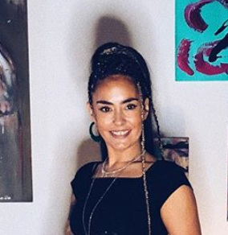

Sofia Zida
Sofia Stenman, better known as Sofia Zida, is a Mexican-Finnish singer-songwriter. She has released two albums, "Disco Mamazida" and "Butterfly", along with numerous singles. She works primarily in Finland.
Complete Discography & Tracklists (11)
2006 Disco Mamazida 🎵 0 Tracks
No tracks registered.